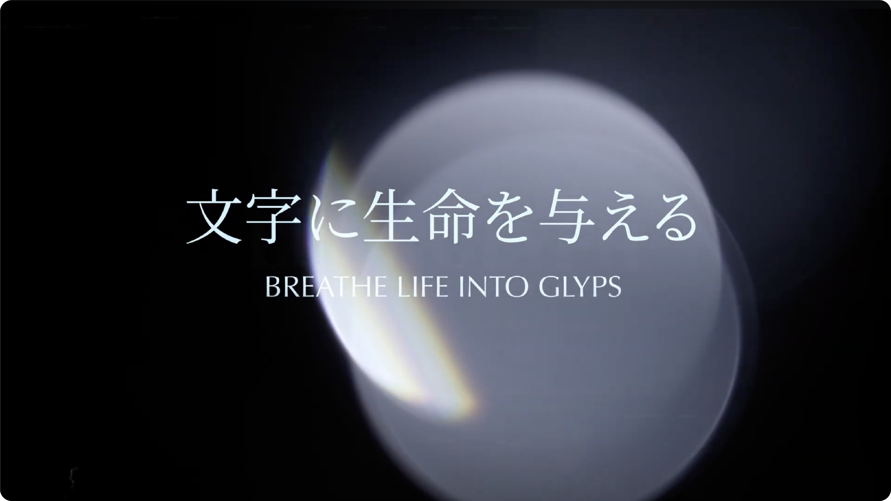
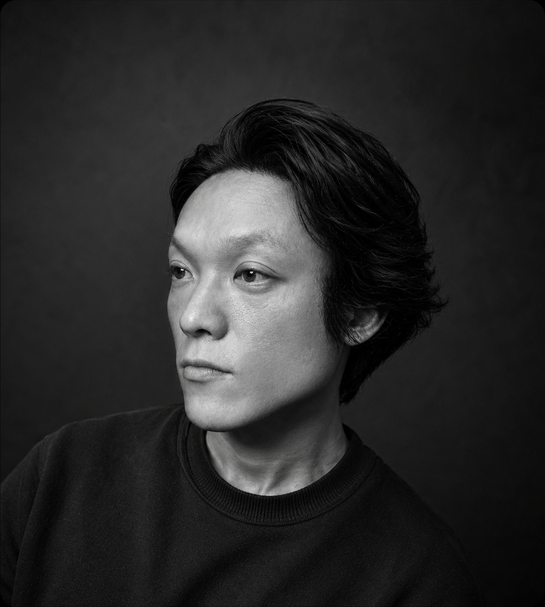

LIVINGLYPH（リビングリフ）は、
“Living（生命）”と“Glyph（文字・記号）”を組み合わせた造語。
情報を伝えるための記号として消費されてきた文字を、
意味から解放し、余白を与えることで、
再び“生命”を宿らせることをコンセプトとした
アートプロジェクト。
LIVINGLYPH
BRAND STORY

PROFILE
松尾 直樹
Graphic Designer / Typographic Artist
タイポグラフィアーティスト / グラフィックデザイナー
企業ブランディング、VI、グラフィック、Web、空間演出、VMD、アパレルデザインなど、文字やビジュアルを軸にしたデザイン領域で経験を積む。
ブランディング会社では、ロゴ・VI、ガイドライン、Web、印刷物、映像、空間など、ブランド表現を複数媒体へ展開する案件を経験。商業施設・イベント領域では、時計・ジュエリーブランドを中心に、VMD、サイン、装飾、空間グラフィック、施工管理まで含めたビジュアル制作に携わってきた。
ブランドやプロジェクトの背景にある思想を読み取り、情報を整理しながら、ロゴ・印刷物・Web・空間・プロダクトへ一貫した表現として展開することを得意とする。
また、個人プロジェクトとして、文字に生命を与えるアートプロジェクト「LIVINGLYPH」を主宰。言葉や記号を単なる情報としてではなく、形・余白・構造によって再構成し、ひとつの生きたイメージとして表現している。
AWARDS
2017｜UNIQLO UT GRAND PRIX 2017
2025｜株式会社丸藤シートパイル 100周年記念ロゴコンペ 最優秀賞
PORTFOLIO
Selected works are available upon request.
For security reasons, the portfolio file is shared only after review.
制作実績をまとめたポートフォリオは、申請制で共有しています。
閲覧をご希望の方は、以下よりご連絡ください。
PORTFOLIO REQUEST